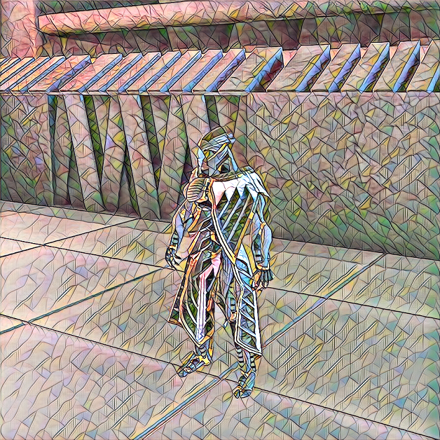
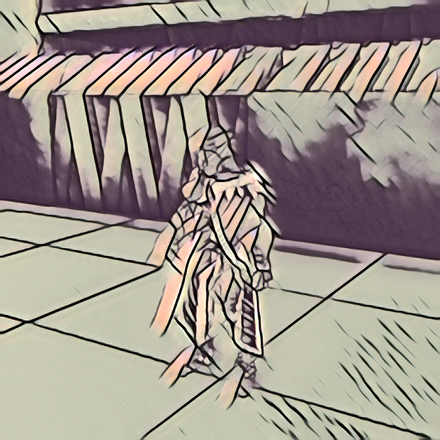

Weekly Recap
End-to-End Style Transfer Tutorial
I started planning out how I want to structure the tutorial. I want to provide a guide for how to tune the style transfer model to get more desirable results. To that end, I’ve been generating several examples of stylized images with different settings. For example, here’s the difference that adjusting the resolution of the style image can make.
360p

1440p

I also got a bit sidetracked experimenting with customized model architectures. I still haven’t found a model that consistently generates superior results across different styles.
Preparing for Job Hunting
Assuming that the pandemic doesn’t mess things up too much, I should be finishing my degree this year. With that in mind, I’ve started learning about all the things that go into job hunting these days. I should probably start using social media platforms like LinkedIn and Twitter to “build my brand”. It might also be a good idea to invest more time in making this blog look better.
Links of the Week
Learning Apps, Games, and Simulations
This is something that I’ve become increasingly interested since I started learning how to use Unity last year. Most current forms of online education are merely poor imitations of the traditional in-person format. They don’t take advantage of the possibilities unlocked with virtual environments. Here’s some applications that do a better job of leveraging those possibilities.
The 50 best mastery-based apps for PreK-12th grades
A list of high quality educational apps that help make learning fun and engaging.
iCircuit 3D
A virtual workbench for designing and testing electronics projects. It’s currently iOS only but the developer is looking to bring it to other platforms in the future.
Machine Learning
The unreasonable effectiveness of synthetic data with Daeil Kim
I’m finally catching up on episodes of the Gradient Descent podcast. This episode is an interview with the CEO of one of the few companies the specializes in creating synthetic training data. Apparently, they use Unreal Engine in their workflow. I might need to make learning Unreal Engine a higher priority.
PolyGen: An Autoregressive Generative Model of 3D Meshes

I learned about this project from the above podcast episode. I haven’t tried it yet, but I’m interested in where these types of models are heading.
spaCy v3.0
The open-source NLP library, spaCy, has release version 3.0. You can check out what’s new in the link above.
Loss Landscape Explorer
A project that aims to produce high quality visualizations of deep learning optimization processes.
Self-directed Learning
The Ultimate Hack for Learning In Public
One of the reasons, I started this blog was to practice learning in public. I’ve never enjoyed writing, but the process of making tutorials here has been undeniably beneficial. If you want to give learning in public a shot, this post provides some great advice for how to proceed.
Illustrated Essays by Maggie Appleton

I learned about this site from the previous link. I like this idea of using illustrated essays to help build intuition for abstract concepts. It’s like the learning apps above but requires less compute power. I haven’t done any in-depth explanations yet, but I might try this format when I do. I’m curious how difficult it would be to make an application that helps students build their own visual metaphors for abstract concepts.
Readwise
I’ve never been good about using spaced repetition tools, despite how effective they are for memorizing new topics. However, this seems like a good tool for remembering what you read.
Software Development
pypi template
A minimal template for creating a pypi package
Make a new pr from an existing cloned repository by simply doing make_pr.